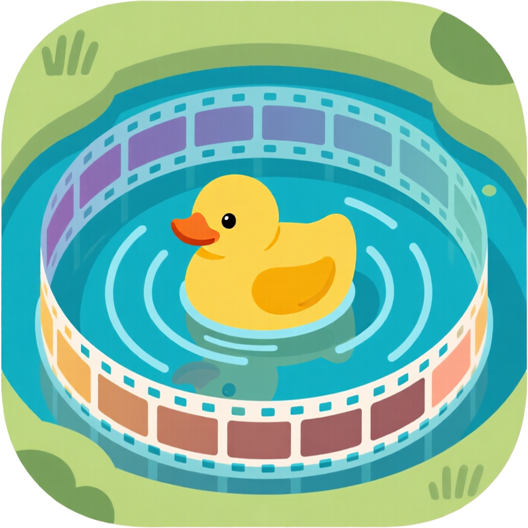

Trình quản lý tác vụ tự động cho Whisk AI
Tốc độ cao, chạy ngầm ổn định. Không cần mở tab Whisk. Hỗ trợ tính năng Ảnh tham chiếu và Tải ảnh tự động.
Mô phỏng thao tác chuột. Yêu cầu giữ tab Whisk luôn mở. Sử dụng khi bản API gặp sự cố.
Phần mềm chạy độc lập trên Windows (Portable). Sức mạnh của bản 7.6.0 nhưng không cần mở trình duyệt.